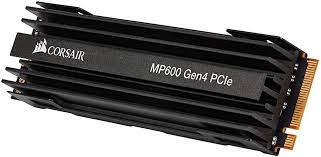

Componentes de un Ordenador

PROCESADOR
PLACA BASE
MEMORIA RAM
DISCO DURO

¿Qué es un disco duro M.2? ¿Para qué sirve SSD M.2?
Es una unidad de formato de tamaño pequeño en estado sólido.
Que consiste en una unidad de almacenamiento ultrarrápida que permite escribir y leer información a velocidades muy altas, lo que se transforma en un aumento del rendimiento de nuestro equipo.
En los últimos años han ido ganando protagonismo el M.2 respecto al disco duro
de SSD SATA de 2,5” pulgadas.
Un disco SSD M.2 sirve para conectar a un PC y obtener almacenamiento ya sea como unidad principal o secundaria ,
es muy recomendable usar este disco como unidad principal donde esté instalado el sistema operativo.
Con el discopodemos ampliar las capacidades de almacenamiento de un PC de escritorio o portátil
tambien podemos usarlo como único disco de almacenamiento.
Mejores SSD M.2: Cuál comprar?

Si tienes un portátil u ordenador de escritorio con un zócalo M2 disponible podras instalar un SSD M2 para mejorar considerablemente el rendimiento de tu equipo. A continuación te dejamos algunas recomendaciones de compra que seguro que te van a resultar de gran utilidad.
| SDD M.2 |
Precio |
Tamaño |
Consumo |
Velocidad(escritura y lectura) |
| Kioxia EXCERIA |
58,44€ |
500GB |
3,9W |
1700MB / s |
| Samsung 970 EVO Plus |
132,38€ |
1TB |
6W |
3500 MB/s |
| Corsair Force |
509,99€ |
2TB |
6,5 W |
4900MB/s |